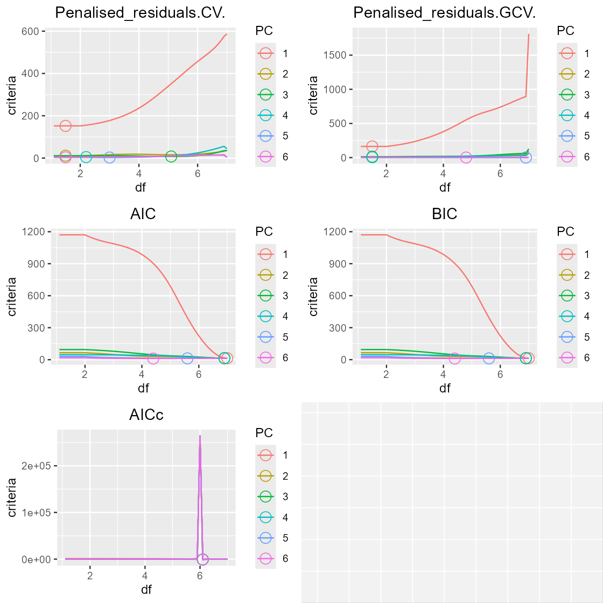
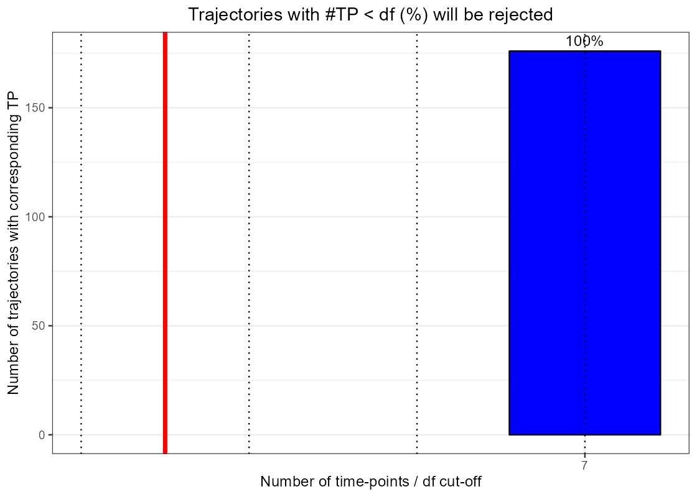

vignettes/advanced-command-line-functions.Rmd
advanced-command-line-functions.RmdWhile the following vignette details all command line functions available in santaR for reference and potential development work, these are not expected to be used on a day-to-day basis (more details are available in each functions help page).
To analyse time-series data, refered to the graphical user interface or the automated command line functions which implement these functions.
This vignette will detail the following underlying functions:
As santaR is an univariate approach, this vignette will use one variable from the acute inflammation dataset detailed in How to prepare input data for santaR.
##
## This is santaR version 1.1.2# data (keep the 3rd variable)
var1_data <- acuteInflammation$data[,3]
# metadata (common to all variables)
var1_meta <- acuteInflammation$meta
# 7 unique time-points
unique(var1_meta$time)## [1] 0 4 8 12 24 48 72## [1] "ind_1" "ind_2" "ind_3" "ind_4" "ind_5" "ind_6" "ind_7" "ind_8"## [1] "Group1" "Group2"## [1] -0.21787887 -0.21787887 -0.51159424 -0.51159424 -0.39686603
## [6] -0.39686603 -0.36399116 -0.36399116 0.91102691 4.19746095
## [11] -0.01893874 0.08296167 0.03205536 1.36463826 0.45089171
## [16] 1.85844915 0.58499815 -0.08218860 -0.29144117 -0.73976352
## [21] -0.04776568 -0.52139013 0.32184021 -0.41087558 1.62075258
## [26] -0.02869199 0.40496659 -1.03962428 0.43082440 -0.76250288
## [31] 0.87155065 -0.48644857 0.78381065 -1.03962428 -0.19688610
## [36] -1.03962428 0.02465099 -1.03962428 0.33945976 -1.03962428
## [41] 0.49869622 -0.76358141 -0.29114335 -1.03962428 0.05743940
## [46] -1.03962428 0.36979758 -1.03962428 2.34452908 -0.85939701
## [51] -0.07503976 -1.03962428 0.58606071 -1.03962428 1.85572115
## [56] -1.03962428The first step is to generate the input matrix by converting the vector of observation (y response for the variable at one time-point for one individual) into a matrix IND (row) x TIME (column) using get_ind_time_matrix():
| 0 | 4 | 8 | 12 | 24 | 48 | 72 | |
|---|---|---|---|---|---|---|---|
| ind_1 | -0.2179 | 0.911 | 0.585 | 1.621 | 0.7838 | 0.4987 | 2.345 |
| ind_2 | -0.2179 | 4.197 | -0.08219 | -0.02869 | -1.04 | -0.7636 | -0.8594 |
| ind_3 | -0.5116 | -0.01894 | -0.2914 | 0.405 | -0.1969 | -0.2911 | -0.07504 |
| ind_4 | -0.5116 | 0.08296 | -0.7398 | -1.04 | -1.04 | -1.04 | -1.04 |
| ind_5 | -0.3969 | 0.03206 | -0.04777 | 0.4308 | 0.02465 | 0.05744 | 0.5861 |
| ind_6 | -0.3969 | 1.365 | -0.5214 | -0.7625 | -1.04 | -1.04 | -1.04 |
| ind_7 | -0.364 | 0.4509 | 0.3218 | 0.8716 | 0.3395 | 0.3698 | 1.856 |
| ind_8 | -0.364 | 1.858 | -0.4109 | -0.4864 | -1.04 | -1.04 | -1.04 |
In order to compare 2 groups, it is necessary to create a grouping matrix that list group membership for all individuals using get_grouping():
| ind | group |
|---|---|
| ind_1 | Group1 |
| ind_2 | Group2 |
| ind_3 | Group1 |
| ind_4 | Group2 |
| ind_5 | Group1 |
| ind_6 | Group2 |
| ind_7 | Group1 |
| ind_8 | Group2 |
The degree of freedom (df) is the parameter that controls how closely each individual’s time-trajectory fit eachs data point, balancing the fitting of the raw data and the smoothing of measurements errors. An optimal df value ensures that the spline is not overfitted or underfitted on the measurments. The degree of freedom should be established once for a dataset as it is a factor of ‘complexity’ of the time-trajectories under study, but does not change with different variables (same metadata, number of time-points,…)
Refer to santaR theoretical background and Selecting an optimal number of degrees of freedom for more details on df and an intuitive approach for its selection.
In order to assist in the selection of an optimal df and visualise its impact, the following functions:
First we extract the eigen-splines across the whole dataset using get_eigen_spline():
var_eigen <- get_eigen_spline( inputData=acuteInflammation$data, ind=acuteInflammation$meta$ind, time=acuteInflammation$meta$time)## nipals calculated PCA
## Importance of component(s):
## PC1 PC2 PC3 PC4 PC5 PC6
## R2 0.8281 0.0679 0.05191 0.02942 0.01436 0.008339
## Cumulative R2 0.8281 0.8960 0.94788 0.97731 0.99166 1.000000## total time: 0.83 secs| 0 | 4 | 8 | 12 | 24 | 48 | 72 | |
|---|---|---|---|---|---|---|---|
| PC1 | 5.933 | -24 | -2.723 | 2.045 | 6.146 | 6.049 | 6.546 |
| PC2 | -4.34 | 0.5412 | -2.18 | 1.551 | -0.1612 | -1.158 | 5.746 |
| PC3 | -3.195 | -1.782 | 5.305 | 1.726 | -0.1319 | -1.014 | -0.9077 |
| PC4 | 0.4109 | -0.09695 | -1.724 | 4.28 | 0.1921 | -1.313 | -1.749 |
| PC5 | -1.198 | 0.2399 | -0.5312 | -0.636 | 3.136 | -0.1187 | -0.8928 |
| PC6 | 1.094 | -0.07218 | 0.4487 | -0.3782 | 0.5242 | -2.278 | 0.6614 |
## [1] 0.828073142 0.067899396 0.051910368 0.029422712 0.014355448 0.008338933## nipals calculated PCA
## Importance of component(s):
## PC1 PC2 PC3 PC4 PC5 PC6
## R2 0.8281 0.0679 0.05191 0.02942 0.01436 0.008339
## Cumulative R2 0.8281 0.8960 0.94788 0.97731 0.99166 1.000000It is then possible to estimate the df corresponding to the minimisation of a metric (penalised_residuals cross-validated, penalised_residuals general cross-validation, AIC, BIC or AICc) using get_eigen_DF(). The best df can either be averaged over all eigen-splines df or weighted by the variance explained by each eigen-spline wdf:
| CV | GCV | AIC | BIC | AICc |
|---|---|---|---|---|
| 2.712 | 3.298 | 6.289 | 6.298 | 3.499 |
| CV | GCV | AIC | BIC | AICc |
|---|---|---|---|---|
| 2.181 | 2.095 | 6.943 | 6.944 | 5.55 |
The evolution of these metrics (y) depending on df (x) can be plotted for each eigen-spline using get_param_evolution() and plot_param_evolution():
library(gridExtra)
# generate all the parameter values across df
var_eigen_paramEvo <- get_param_evolution(var_eigen, step=0.1)
# plot the metric evolution
plot(arrangeGrob(grobs=plot_param_evolution(var_eigen_paramEvo, scaled=FALSE)))
# Scale the metrics for each eigen-spline between 0 and 1
plot(arrangeGrob(grobs=plot_param_evolution(var_eigen_paramEvo, scaled=TRUE)))As we can see, the recommended df can vary widely depending on the metric selected. get_eigen_DFoverlay_list() will plot all eigen-projections (green points), a manually selected df (blue line) and automatically fitted df (red line), while grey lines represent splines at 0.2 df intervals (default value):
library(gridExtra)
# plot all eigen-projections
plot(arrangeGrob(grobs=get_eigen_DFoverlay_list(var_eigen, manualDf = 5)))It should be noted that df=2 corresponds to a linear model. df=number(time-points) corresponds to a curve that will go through all points (overfitted).
A final factor to take into account is the number of points needed for each individuals depending on the df selected:
Using plot_nbTP_histogram() we can visualise how many samples would have to be rejected for a given df. Due to the lack of missing values in the acuteInflammation dataset, the plots is not very informative.

As it does not seem to be possible to automatically select the degree of freedom, a choice based on visualisation of the splines while being careful of overfitting, keeping in mind the ‘expected’ evolution of the underlying process is the most sensible approach.
Fitting of each individual and group mean curves are achieved with santaR_fit() to generate a SANTAObj that is then used for processing:
var1 <- santaR_fit(var1_input, df=5, groupin=var1_group)
# it is possible to access the SANTAObj structure, which will be filled in the following steps
var1$properties## $df
## [1] 5
##
## $CBand
## $CBand$status
## [1] FALSE
##
## $CBand$nBoot
## [1] NA
##
## $CBand$alpha
## [1] NA
##
##
## $pval.dist
## $pval.dist$status
## [1] FALSE
##
## $pval.dist$nPerm
## [1] NA
##
## $pval.dist$alpha
## [1] NA
##
##
## $pval.fit
## $pval.fit$status
## [1] FALSE
##
## $pval.fit$nPerm
## [1] NA
##
## $pval.fit$alpha
## [1] NA## $inputData
## 0 4 8 12 24
## ind_1 -0.2178789 0.91102691 0.58499815 1.62075258 0.78381065
## ind_2 -0.2178789 4.19746095 -0.08218860 -0.02869199 -1.03962428
## ind_3 -0.5115942 -0.01893874 -0.29144117 0.40496659 -0.19688610
## ind_4 -0.5115942 0.08296167 -0.73976352 -1.03962428 -1.03962428
## ind_5 -0.3968660 0.03205536 -0.04776568 0.43082440 0.02465099
## ind_6 -0.3968660 1.36463826 -0.52139013 -0.76250288 -1.03962428
## ind_7 -0.3639912 0.45089171 0.32184021 0.87155065 0.33945976
## ind_8 -0.3639912 1.85844915 -0.41087558 -0.48644857 -1.03962428
## 48 72
## ind_1 0.4986962 2.34452908
## ind_2 -0.7635814 -0.85939701
## ind_3 -0.2911434 -0.07503976
## ind_4 -1.0396243 -1.03962428
## ind_5 0.0574394 0.58606071
## ind_6 -1.0396243 -1.03962428
## ind_7 0.3697976 1.85572115
## ind_8 -1.0396243 -1.03962428
##
## $grouping
## ind group
## 1 ind_1 Group1
## 2 ind_2 Group2
## 3 ind_3 Group1
## 4 ind_4 Group2
## 5 ind_5 Group1
## 6 ind_6 Group2
## 7 ind_7 Group1
## 8 ind_8 Group2
##
## $cleanData.in
## 0 4 8 12 24
## ind_1 -0.2178789 0.91102691 0.58499815 1.62075258 0.78381065
## ind_3 -0.5115942 -0.01893874 -0.29144117 0.40496659 -0.19688610
## ind_5 -0.3968660 0.03205536 -0.04776568 0.43082440 0.02465099
## ind_7 -0.3639912 0.45089171 0.32184021 0.87155065 0.33945976
## ind_2 -0.2178789 4.19746095 -0.08218860 -0.02869199 -1.03962428
## ind_4 -0.5115942 0.08296167 -0.73976352 -1.03962428 -1.03962428
## ind_6 -0.3968660 1.36463826 -0.52139013 -0.76250288 -1.03962428
## ind_8 -0.3639912 1.85844915 -0.41087558 -0.48644857 -1.03962428
## 48 72
## ind_1 0.4986962 2.34452908
## ind_3 -0.2911434 -0.07503976
## ind_5 0.0574394 0.58606071
## ind_7 0.3697976 1.85572115
## ind_2 -0.7635814 -0.85939701
## ind_4 -1.0396243 -1.03962428
## ind_6 -1.0396243 -1.03962428
## ind_8 -1.0396243 -1.03962428
##
## $cleanData.pred
## 0 4 8 12 24
## ind_1 -0.03040631 0.56124885 0.98284290 1.2842945 0.88191298
## ind_3 -0.43772801 -0.19221430 -0.00594887 0.1514541 -0.12285555
## ind_5 -0.33467888 -0.08003787 0.11733113 0.2624271 0.08162091
## ind_7 -0.21917438 0.21856919 0.51666059 0.6967476 0.40689485
## ind_2 1.07199235 1.61234822 1.02168852 0.1965878 -1.05205157
## ind_4 -0.29375553 -0.36253199 -0.62036975 -0.8914169 -1.07972622
## ind_6 0.15268214 0.25972467 -0.11432853 -0.5697866 -1.07954149
## ind_8 0.30394968 0.51680619 0.14463497 -0.3414922 -1.05732947
## 48 72
## ind_1 0.5113377 2.33470416
## ind_3 -0.2973872 -0.07539689
## ind_5 0.0552708 0.58446600
## ind_7 0.3762108 1.84936123
## ind_2 -0.7907262 -0.85374035
## ind_4 -1.0396064 -1.03948646
## ind_6 -1.0451341 -1.03860966
## ind_8 -1.0504671 -1.03784104
##
## $pval.curveCorr
## [1] NA
##
## $pval.dist
## [1] NA
##
## $pval.dist.l
## [1] NA
##
## $pval.dist.u
## [1] NA
##
## $pval.fit
## [1] NA
##
## $pval.fit.l
## [1] NA
##
## $pval.fit.u
## [1] NA
##
## $meanCurve
## Call:
## stats::smooth.spline(x = time[notNA], y = meanVal[notNA], df = sum(notNA))
##
## Smoothing Parameter spar= -0.7565504 lambda= 6.486837e-13 (21 iterations)
## Equivalent Degrees of Freedom (Df): 7
## Penalized Criterion (RSS): 2.358641e-17
## GCV: 0.03087262## $rejectedInd
## list()
##
## $curveInd
## $curveInd$ind_1
## Call:
## stats::smooth.spline(x = xInd, y = yInd, df = df)
##
## Smoothing Parameter spar= 0.3926483 lambda= 0.0001303627 (10 iterations)
## Equivalent Degrees of Freedom (Df): 4.999723
## Penalized Criterion (RSS): 0.4388556
## GCV: 0.7677847
##
## $curveInd$ind_3
## Call:
## stats::smooth.spline(x = xInd, y = yInd, df = df)
##
## Smoothing Parameter spar= 0.3926483 lambda= 0.0001303627 (10 iterations)
## Equivalent Degrees of Freedom (Df): 4.999723
## Penalized Criterion (RSS): 0.1867747
## GCV: 0.3267653
##
## $curveInd$ind_5
## Call:
## stats::smooth.spline(x = xInd, y = yInd, df = df)
##
## Smoothing Parameter spar= 0.3926483 lambda= 0.0001303627 (10 iterations)
## Equivalent Degrees of Freedom (Df): 4.999723
## Penalized Criterion (RSS): 0.07529958
## GCV: 0.1317378
##
## $curveInd$ind_7
## Call:
## stats::smooth.spline(x = xInd, y = yInd, df = df)
##
## Smoothing Parameter spar= 0.3926483 lambda= 0.0001303627 (10 iterations)
## Equivalent Degrees of Freedom (Df): 4.999723
## Penalized Criterion (RSS): 0.1480858
## GCV: 0.2590785
##
##
## $groupMeanCurve
## Call:
## stats::smooth.spline(x = time[notNA], y = meanVal[notNA], df = sum(notNA))
##
## Smoothing Parameter spar= -0.7565504 lambda= 6.486837e-13 (21 iterations)
## Equivalent Degrees of Freedom (Df): 7
## Penalized Criterion (RSS): 4.67263e-18
## GCV: 0.006116077
##
## $point.in
## x y
## 1 0 -0.21787887
## 2 4 0.91102691
## 3 8 0.58499815
## 4 12 1.62075258
## 5 24 0.78381065
## 6 48 0.49869622
## 7 72 2.34452908
## 8 0 -0.51159424
## 9 4 -0.01893874
## 10 8 -0.29144117
## 11 12 0.40496659
## 12 24 -0.19688610
## 13 48 -0.29114335
## 14 72 -0.07503976
## 15 0 -0.39686603
## 16 4 0.03205536
## 17 8 -0.04776568
## 18 12 0.43082440
## 19 24 0.02465099
## 20 48 0.05743940
## 21 72 0.58606071
## 22 0 -0.36399116
## 23 4 0.45089171
## 24 8 0.32184021
## 25 12 0.87155065
## 26 24 0.33945976
## 27 48 0.36979758
## 28 72 1.85572115
##
## $point.pred
## x y
## 1 0 -0.03040631
## 2 4 0.56124885
## 3 8 0.98284290
## 4 12 1.28429446
## 5 24 0.88191298
## 6 48 0.51133768
## 7 72 2.33470416
## 8 0 -0.43772801
## 9 4 -0.19221430
## 10 8 -0.00594887
## 11 12 0.15145407
## 12 24 -0.12285555
## 13 48 -0.29738722
## 14 72 -0.07539689
## 15 0 -0.33467888
## 16 4 -0.08003787
## 17 8 0.11733113
## 18 12 0.26242705
## 19 24 0.08162091
## 20 48 0.05527080
## 21 72 0.58446600
## 22 0 -0.21917438
## 23 4 0.21856919
## 24 8 0.51666059
## 25 12 0.69674758
## 26 24 0.40689485
## 27 48 0.37621084
## 28 72 1.84936123
##
## $groupData.in
## 0 4 8 12 24 48
## ind_1 -0.2178789 0.91102691 0.58499815 1.6207526 0.78381065 0.4986962
## ind_3 -0.5115942 -0.01893874 -0.29144117 0.4049666 -0.19688610 -0.2911434
## ind_5 -0.3968660 0.03205536 -0.04776568 0.4308244 0.02465099 0.0574394
## ind_7 -0.3639912 0.45089171 0.32184021 0.8715506 0.33945976 0.3697976
## 72
## ind_1 2.34452908
## ind_3 -0.07503976
## ind_5 0.58606071
## ind_7 1.85572115
##
## $groupData.pred
## 0 4 8 12 24 48
## ind_1 -0.03040631 0.56124885 0.98284290 1.2842945 0.88191298 0.5113377
## ind_3 -0.43772801 -0.19221430 -0.00594887 0.1514541 -0.12285555 -0.2973872
## ind_5 -0.33467888 -0.08003787 0.11733113 0.2624271 0.08162091 0.0552708
## ind_7 -0.21917438 0.21856919 0.51666059 0.6967476 0.40689485 0.3762108
## 72
## ind_1 2.33470416
## ind_3 -0.07539689
## ind_5 0.58446600
## ind_7 1.84936123Confidence bands on the group mean curves can be calculated by bootstrapping using santaR_CBand():
Plot is achieved using santaR_plot(), for more details see Plotting options:
The p-values are calculated by the comparison of distance between group mean curves by random sampling of individuals. Due to the stochastic nature of the test, the p-value obtained can slighlty vary depending on the random draw. This can be compounded by using the lower and upper confidence range on the p-value that is estimated at the same time.
santaR_pvalue_dist() will calculate the significance of the difference between two groups:
## [1] 0.01198801## [1] 0.006868897## [1] 0.02084214## [1] -0.1309867